The design for the Lamar Dodd School of Art is marked by a clear black and white color scheme and bold typography. Flat design elements are employed to insure easy navigation through the website.
The homepage has slideshow of featured news and events. The homepage also features a mini calendar, a feed of recent news and upcoming events and a visually impressive list of the academic areas at the Lamar Dodd School of Art.
About the Lamar Dodd School of Art
For the Lamar Dodd School of Art website, every page got focused attention to detail and design. The ‘about’ page is a basic page of only text, images and links, but it features an attractive design that makes it easy for a user to read about the school’s history and then navigate to other parts of the website.
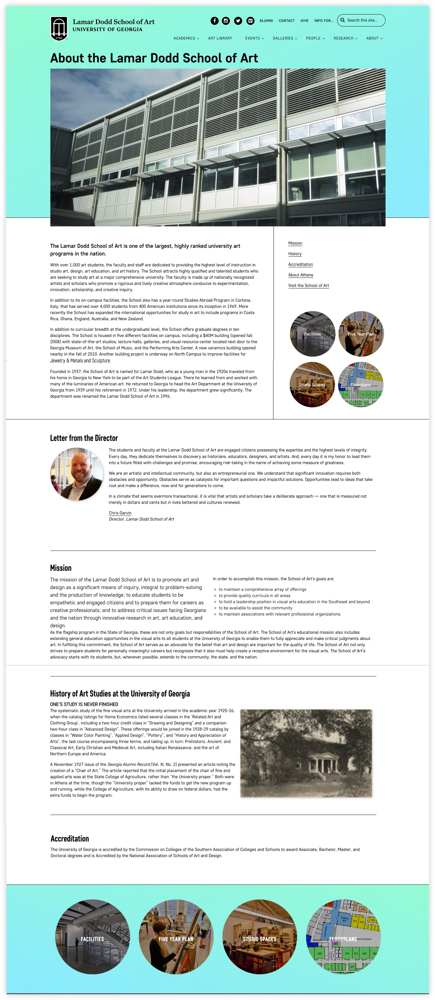 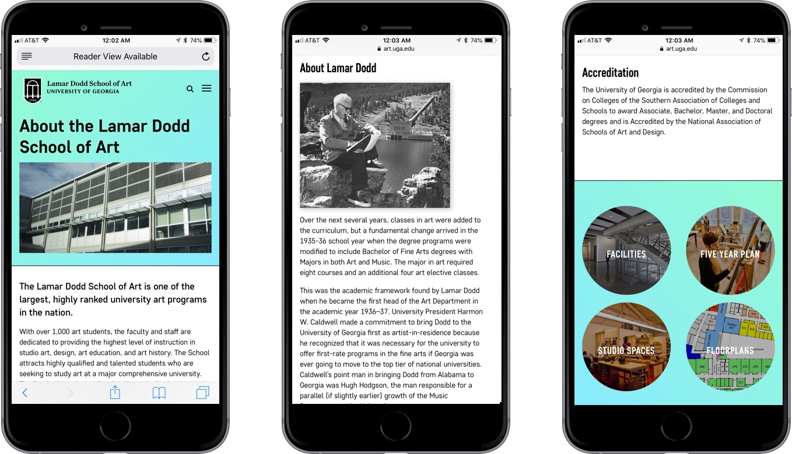
News
The Lamar Dodd School of Art has an active and successful faculty, students and alumni. Therefore there is much to share and celebrate in the ‘news’ section of the website. The ‘Recent News’ page of the website features a feed of articles, as well as a way to filter news by category or academic area.
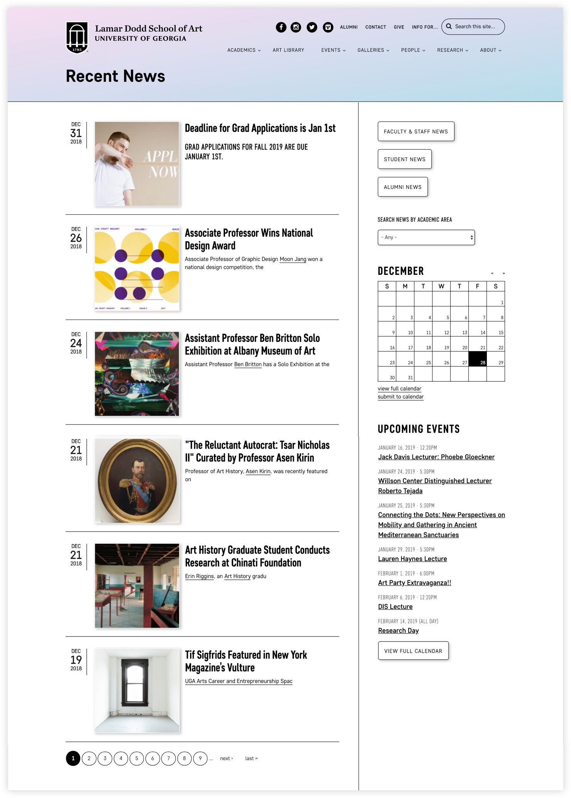
The individual news pages feature bold typography for the title, a large featured image, easy-to-read post content and a variety of linked tags and categories. The sidebar allows you to navigate to other news articles.
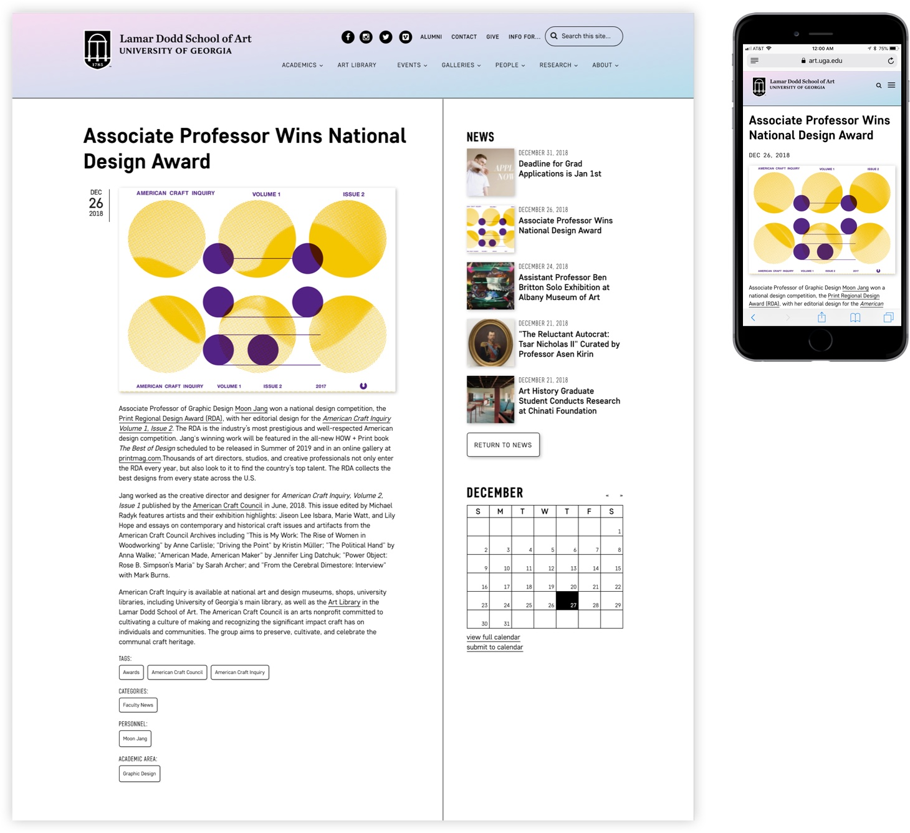
Events
The Lamar Dodd School of Art has a vibrant and active community that hosts a variety of lectures, forums, galleries and educational events. The events are displayed in two formats: a calendar, for day-by-day overview of what’s happening at The Dodd, and a list-view of upcoming events.
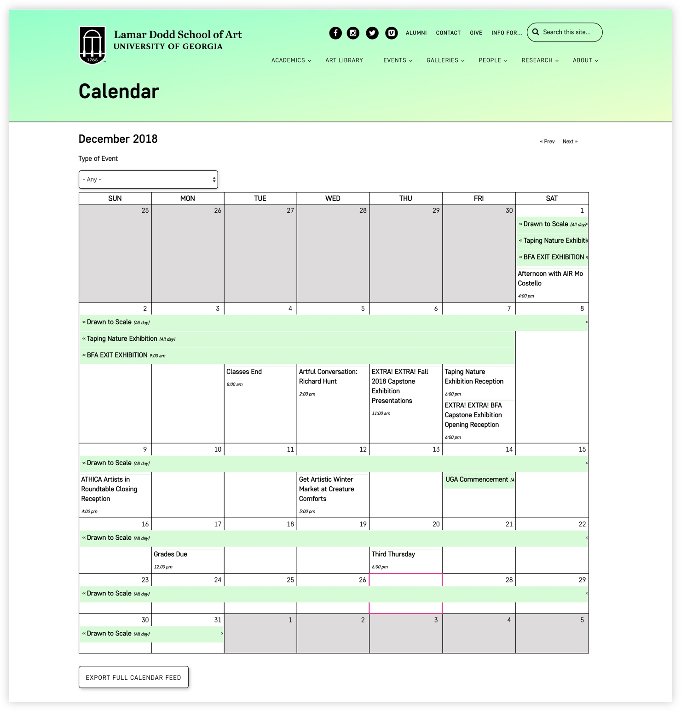 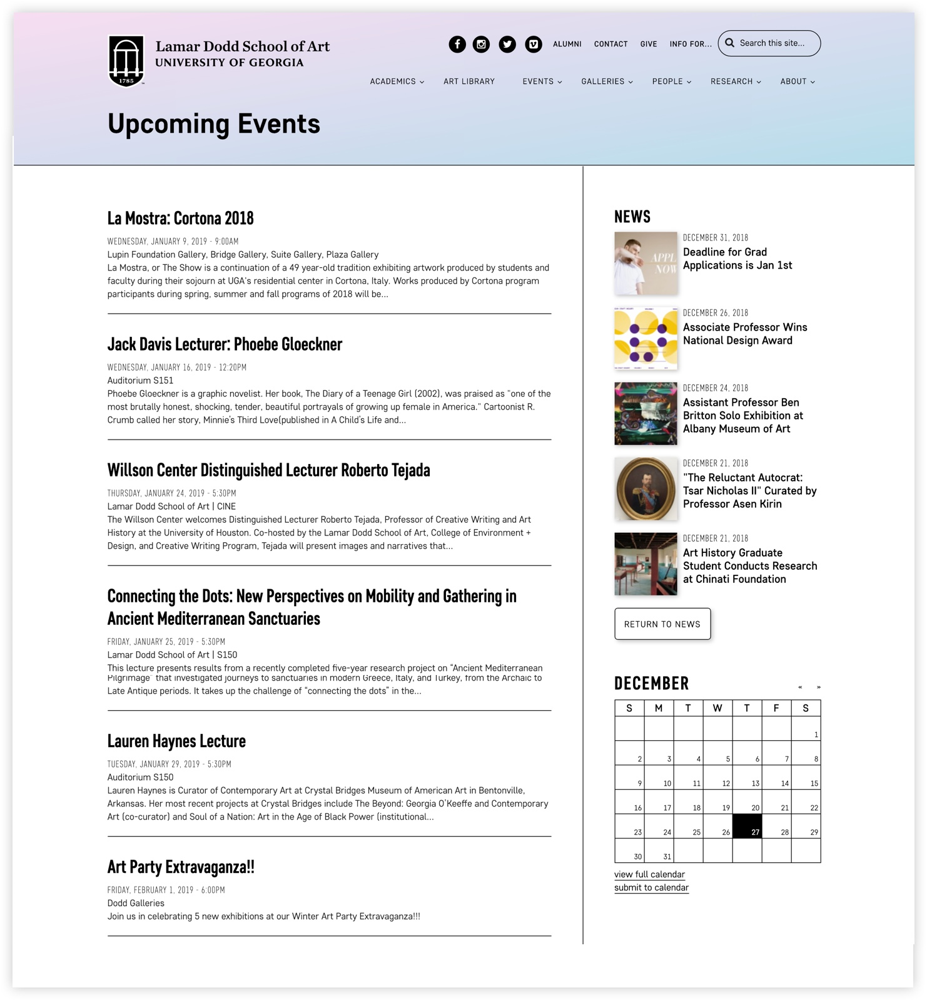
An individual event page features all the information needed to attend and participate in an event at The Dodd; including time, location, details, speaker info and sponsor. Users are able to add individual events to their personal calendar or they are able to export the entire calendar to their personal calendar feed.
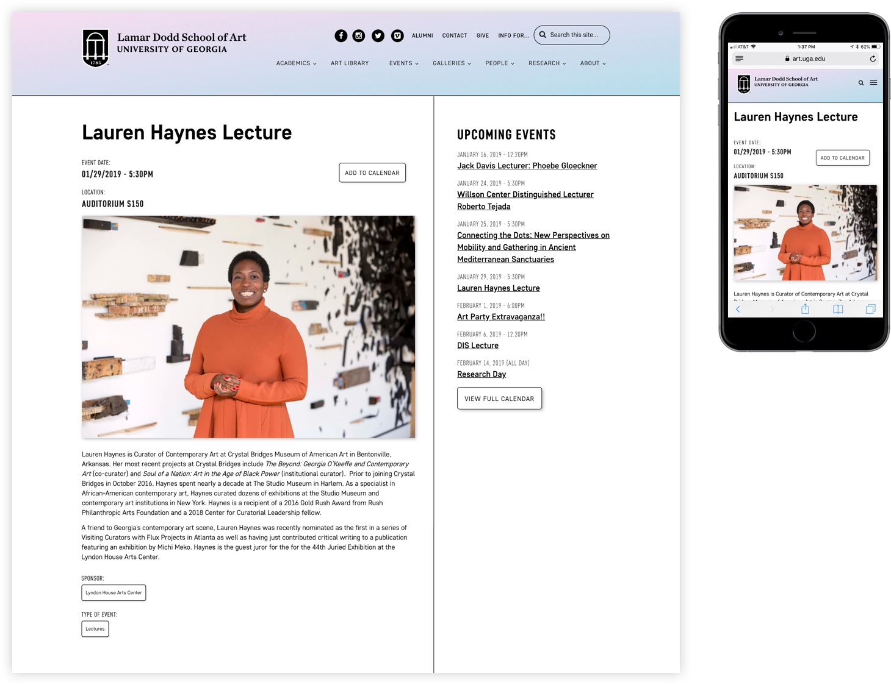
Directory
The Lamar Dodd School of Art employs a variety of faculty, staff and graduate students. These are the people that make The Dodd an incredible art school, so I wanted to create attractive and informative profiles for them. The main directory features a feed of faculty that includes their image, name, email and position title. You can filter faculty members by ‘area of study’ and alphabetically by their last name.
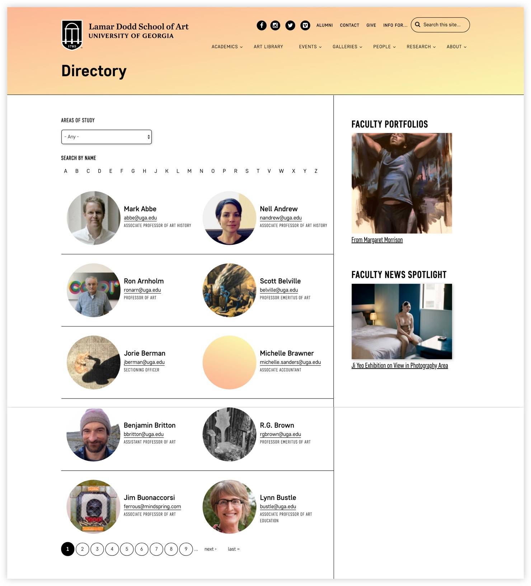

The individual faculty profiles include a grid of important information that’s easy to quickly find. Below the information grid is a bio of the faculty or staff member, research detail, gallery images and news items they have been tagged in.
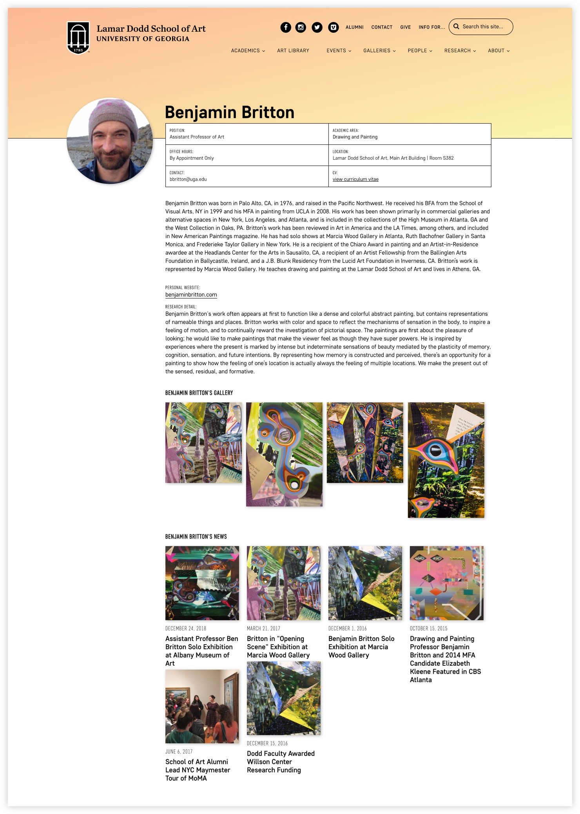 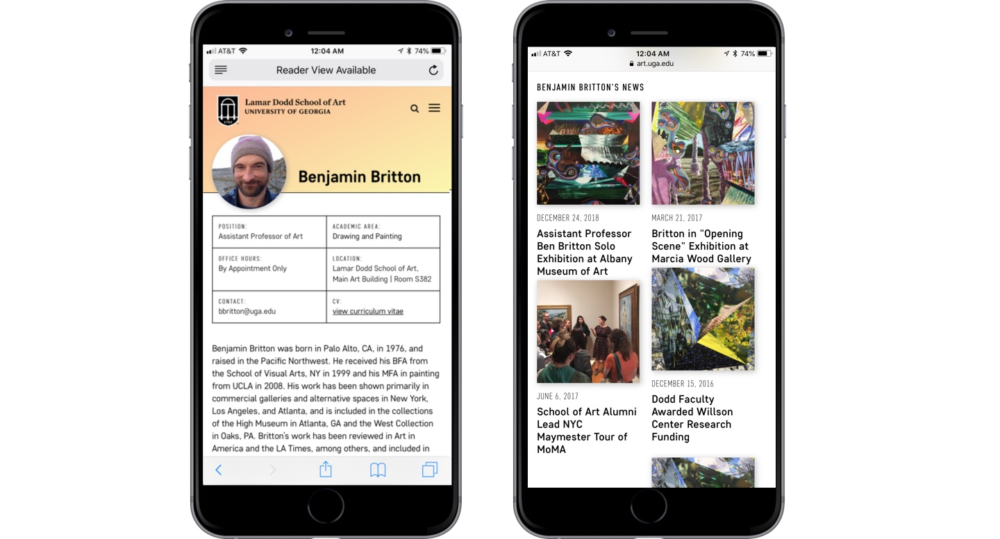
Academics
The academics section of the website offers valuable information to prospective students that wish to learn more about what it’s like to study at The Dodd. The main academics page features a list of the degrees and minors offered at The Dodd, as well as list of the areas of study offered at the dodd.
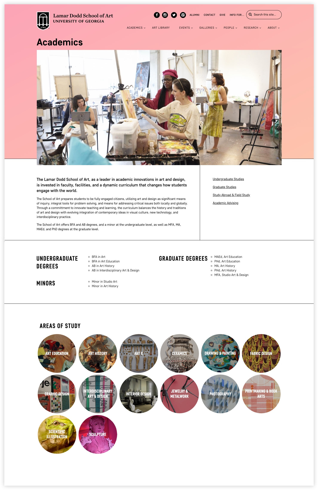
An individual area of study serves as a microsite for one of The Dodd’s departments. An area of study page features information on the mission of the departments, the courses offered and achievements of its students and faculty. The area of study pages also feature upcoming events and recent news in the department, as well as a faculty list of those that teach in the department.
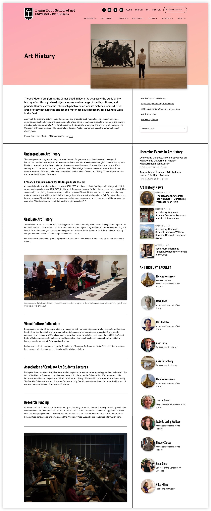
Galleries
The Lamar Dodd School of Art courses are where you learn and create art, but the galleries is where you showcase it. The Dodd has a robust amount of galleries in the School of Art main building that feature an evolving showcase of faculty, visiting artist and student work. The galleries section of the site allows users to learn more about current, upcoming and past exhibitions. You can also submit a proposal for an exhibition through the site.
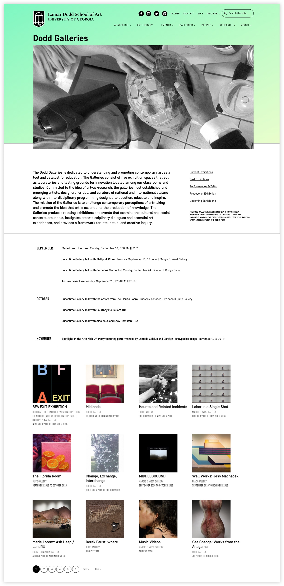
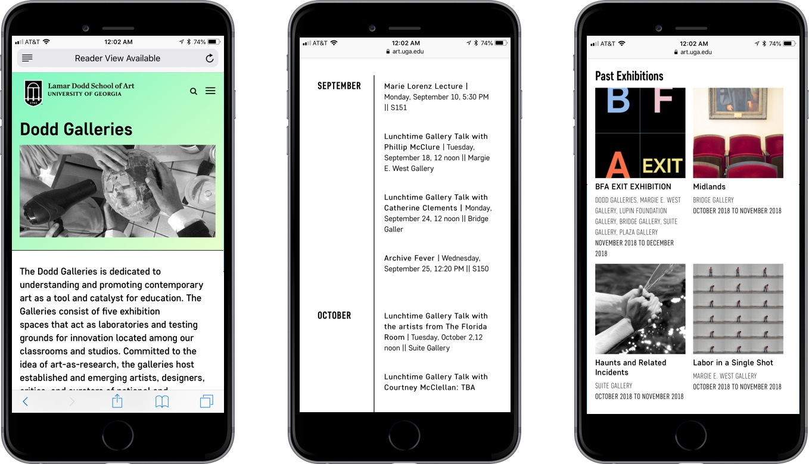
Every element of the Lamar Dodd School of Art website is mobile-friendly. Students, faculty, alumni and prospective students can access the Lamar Dodd website from their smart phone, tablet or any other device.
The Lamar Dodd website features a continuous design throughout that includes large visuals, gradients and bold typography.